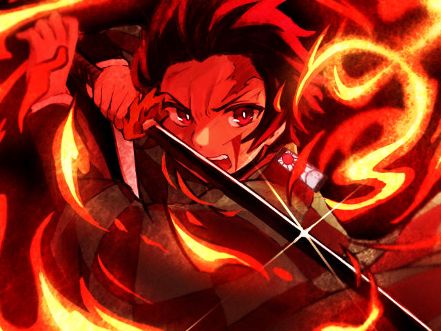

- Back
- Horror
- Home
Ibig Sabihin
Nag-aaral ako sa USTE . Ang dami kong kaklaseng Intsik... Apelyidong Uy, Lim, Tan, Co, Go, Chua, Chi, Sy, Wy, at kung anu-ano pa.... . Pero sa kanilang lahat kay Gilbert Go ako naging malapit... Mayaman si Gilbert, madalas siya ang taya sa tuwing gigimik ang barkada... . Isang araw na-ospital ang kanyang ama...Sinamahan ko siya sa pagdalaw.... . Nasa ICU na noon ang kanyang ama dahil sa stroke. Naron din ang ilan sa kanyang malalapit na kamag-anak. Ilang sandali pa ay nag uwian na sila... . Maiwan daw muna ako at pakibantayan ang kanyang ama habang inihahatid nya ang kanyang mga kamag-anak palabas ng ospital... . Lumipat ako sa gawing kaliwa ng kama ng kanyang ama para ilapag ang mga iniwan nilang mga gamit na kakailanganin ng magbabantay sa ospital... . Nang akmang ilalapag ko na ay biglang nangisay ang matanda.. Hinahabol nya ang kanyang hininga... . Kinuyom nya ang kanyang palad at paulit-ulit siyang nagsalita ng wikang intsik na hindi ko maintindihan... . "Di ta guae yong khee".....!!! "Di ta guae yong khee"...!! "Di ta guae yong khee"..!!! . Paulit-ulit nya itong binigkas bago siya malagutan ng hininga... . Pagbalik ni Gilbert ay patay na ang kanyang ama. Ikinagulat nya ang pangyayari ngunit marahil ay tanggap na rin nya na papanaw na ang kanyang ama... . Walang tinig na namutawi sa kanyang bibig. Ngunit iyon na yata ang pinakamasidhing pagluha na nasaksihan ko.... . Nagpa-alam muna ako, dahil siguradong magdadatingan ang kanyang mga kamag-anak...Sumakay ako ng taksi pauwi. Habang nasa taksi.. tinawagan ko ang iba pa naming kabarkada. Una kong tinawagan si Noel Chua... . Dahil marunong si Noel mag-intsik, tinanong ko muna kung ano ang ibig sabihin ng "Di ta guae yong khee". "Huwag mong apakan ang oxygen. "... "Bakit saan mo ba narinig 'yan?